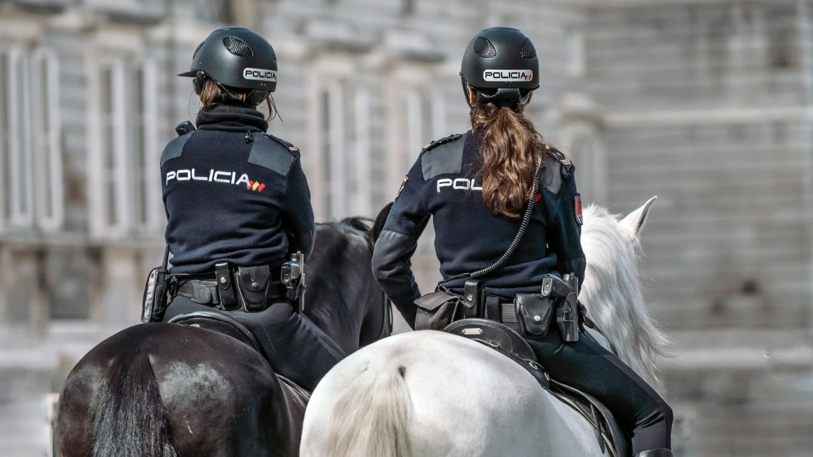

Living in Spain · Practical
Is Spain Safe?
 By Aleksandra Kobus · · updated · 3 min read
By Aleksandra Kobus · · updated · 3 min read

In short: Yes. Spain is one of the safer countries in Europe, ranked 27th of 163 countries in the 2026 Global Peace Index, with very low levels of violent crime. The main risks are pickpocketing in crowded places, theft from cars and burglaries in empty holiday homes. Use common sense in busy areas, never leave bags visible in the car, and give your home an alarm and good shutters. In an emergency call 112.
Safety is one of the first things people ask about before moving to Spain or buying a holiday home. The short answer is reassuring: violent crime is rare, and life on the Costa Blanca and Costa del Sol feels relaxed. But, as anywhere with millions of visitors, petty crime exists. Here are the facts, and simple ways to stay safe.
What the figures say
- Global Peace Index 2026: Spain ranks 27th of 163 countries, ahead of Germany (28th) and Italy.
- Crime rate: according to the Ministry of the Interior, conventional crime in 2025 was about 41 offences per 1,000 inhabitants, close to the lowest in the series. Online fraud makes up a growing share of the rest.
- Violent crime: Spain has one of the lowest murder rates in Europe.
Most reported crimes are thefts, and they are concentrated in big cities and busy tourist spots such as central Barcelona and Madrid.
Who to call

- 112: the European emergency number for police, ambulance and fire, with operators who speak English.
- Policía Nacional (091): in larger towns; also where you report crimes and get documents such as the TIE.
- Guardia Civil (062): in rural areas, on motorways and in many smaller towns.
- Policía Local (092): run by the town hall; traffic, noise and local issues.
Minor thefts without violence can be reported online with the Policía Nacional and then signed at a police station. Many stations in tourist areas have English-speaking staff or interpreters.
Safe areas on the coast
Residential towns on the Costa Blanca and Costa del Sol generally have low crime. Quiet, well-kept places such as Altea, Jávea, Calpe, Cumbre del Sol, Estepona and Casares are known for a calm atmosphere. Busy resorts and city centres see more pickpocketing in summer, but serious crime remains rare. Many buyers choose a gated community with a guard or cameras, which adds peace of mind when the home stands empty.
Common risks and how to avoid them
- Pickpockets: on crowded beaches, markets, festivals, trains and at airports. Keep your phone and wallet in a front pocket or a closed bag.
- Car theft: never leave bags, phones or documents visible, especially at beach car parks and viewpoints. Beware of strangers pointing out a "flat tyre" at petrol stations.
- Beach theft: do not leave valuables on your towel when you swim.
- Online and phone scams: fake messages from banks, parcel firms or "the tax office". Never share codes or card details.
- Rental and sale scams: only pay deposits through a registered agency, a lawyer or a notary, never by money transfer to a stranger.
Keeping your home safe
Burglaries most often target holiday homes that stand empty for weeks. A monitored alarm, strong doors, window bars or roller shutters (persianas), timers for lights, and a neighbour or key holder who checks the house make a big difference. Home insurance usually requires certain locks, so read your policy. If you worry about squatters, our guide to squatters in Spain explains the real risks and how to prevent them, and looking after your flat covers key-holding services.
Heat, storms and fire
The biggest everyday risks in Spain are often natural. In summer, drink plenty of water and avoid the midday sun during heat waves. In autumn, heavy storms (DANA) can cause flash floods, so never drive through flooded roads. In dry months, follow the fire bans in forests and on barbecues. Official alerts come from AEMET and the regional emergency services, and the ES-Alert system sends warnings straight to mobile phones.
Frequently asked questions
Is Spain safe to live in?
Yes. Spain has low levels of violent crime and ranks among the safer countries in Europe. Most crime is petty theft in crowded tourist places.
Which areas of Spain are the safest?
Quiet residential towns on the Costa Blanca and Costa del Sol, such as Altea, Jávea, Calpe, Estepona and Casares, are known for low crime. Big city centres have more pickpocketing.
What is the emergency number in Spain?
112, for police, ambulance and fire. Operators speak English.
Is it safe to leave a holiday home empty in Spain?
Usually yes, with an alarm, good shutters and someone who checks the house regularly. Empty homes are the most common burglary target.
Relaxed, with a little common sense
Most people who move to Spain say they feel safer here than at home. A few simple habits keep it that way. If safety is high on your list, tell us, and we will show you homes in quiet areas and gated communities on both coasts.
Sources: Institute for Economics and Peace – Global Peace Index 2026 · Ministerio del Interior – crime statistics (Balance de Criminalidad) · Policía Nacional – online crime reports